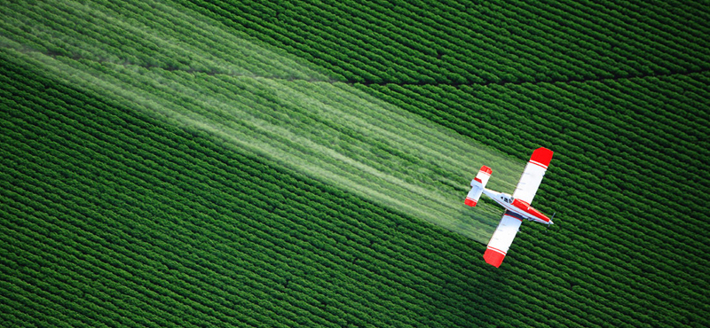

הדברה ירוקה

החיים בבית מסוים עשויים להיות שמחים ומאושרים – עד אשר מופיעים המזיקים השונים, המשבשים את שגרת החיים באופן ניכר וכוללים בתוכם גם לא מעט סכנות בריאותיות לבני הבית. בתנאים האלה, ברור מדוע הצורך בהדברה, שם כולל למגוון שיטות להרחקת מזיקים וחרקים שונים, נכנס לתמונה. הבעיה היא ששיטות רבות של הדברה, עלולות להיות מסוכנות לא פחות מאשר המזיקים שהן באות להתמודד איתם. הפיתרון הכמעט יחידי הוא התבססות על הדברה ירוקה, שאינה מזיקה לאדם ולסביבה כאחד.
מה הופך הדברה לירוקה?
הדברה ירוקה, ברמה הכללית, היא הדברה שנועדה לבצע את עבודתה מבלי להשפיע לרעה על הסביבה או המערכות האקולוגיות השונות. בעיקרו
של דבר, חומרי ההדברה הספציפיים הם שנכנסים לתמונה. המציאות מראה שלאורך עשרות שנים, התבסס האדם על חומרים רעילים
עבור בעלי החיים – אך גם כאלה שהיו רעילים עבורם.
חומרים קונבנציוניליים אלה, למרביתם בסיס
כימי, הביאו גם לפגיעה מאסיבית במשאבים (למשל, מי תהום), בבעלי חיים ועוד. הדברה ירוקה מנסה לשנות את החוקים
בשדה המשחק הזה. ראשית, ההתבססות שלה היא על חומרים "ירוקים", כלומר, חומרים, לרוב טבעיים, אשר הפגיעה שלהם בסביבה
היא מינימלית: כאשר הדבר לא בא על חשבון היעילות, כפי שקורה בפועל, ניתן ליהנות משני העולמות.
גם כאשר ההדברה
הירוקה תתבסס על חומרים עם רמת רעילות מסוימת, היא תתפרק במהירות, כך שלאחר הפגיעה במזיק, היא תיעלם, ולא תסכן
את אלה שנחשפים אליה. זו גם הסיבה שפרק הזמן שנדרש לעזוב את הבית לאחר הריסוס, אם בכלל קיים, הוא מינימלי, או
שמרססים המשתמשם בחומרים ירוקים באמת יכולים לבצע את המלאכה גם ללא מסכה המסתירה את פניהם.
סוג אחר של הדברה
ירוקה, פופולארי לא פחות, הוא הדברה ביולוגית. הבסיס להדברה זו פשוט: את המזיקים ניתן להרחיק באמצעות לא אחרים
מאשר האויבים הטבעיים שלהם. כך, מפזרים במקום מסוים, לרוב חקלאי, בעל חיים שמבצע את ההדברה היעילה מהמזיקים הרצויים.
שיטה זו, מיותר לציין, נחשבת לאקולוגית במיוחד, ורמת היעילות שלה גבוהה בכל קנה מידה.
דגשים חשובים: צמצום ומניעה
מעבר לחומרים הספציפיים המשמשים להדברה ירוקה, השיטה נותנת את הדעת על מספר דגשים חשובים נוספים. המטרה המוצהרת שלה היא לעשות
את עבודתה – כלומר, להדביר את המזיקים השונים בתוך מבנה או בגינה – אך באמצעות שימוש מינימלי בחומרי ההדברה.
כל מקרה מחושב לאשורו, במטרה לבצע את ההדברה מצד אחד, ולבטל את הסיכויים להרעלה משנית מהצד האחר.
זו
לא שיטה שבו מרססים כמויות "מסחריות" של חומרי הדברה על מנת לפגוע ב"משהו". עיקרון בסיסי אחר של ההדברה הירוקה
הוא מניעה. הנחת היסוד היא שבאמצעות שמירה על רמות ניקיון ותחזוקה נאותות של הבית, אטימה מלאה של קופסאות המזון,
העלמת מפגעי סביבה וכיוצא בזה, הצורך בהדברה לא יהיה קיים כלל וכלל. מלכודות, רשתות ואמצעים שונים שתכליתם להרחיק
את המזיקים ממקום מסוים, נכנסים לתמונה אף הם בנקודה הזו.
הדרך להדברה הירוקה נכונה
יחד עם העלייה במודעות האקולוגית של השנים האחרונות, לא מעט מדבירים מנסים לשווק עצמם כ"ירוקים", וזאת למרות שהם
עושים שימוש בחומרים מזיקים לסביבה בכל קנה מידה. לכן, צעד מרכזי בדרך להדברה היעילה והבטוחה ביותר הוא בדיקת
החומרים הספציפיים בהם נעשה שימוש, ובחינה אם אכן הם עומדים בתוי התקן הנדרשים לשמירה על איכות הסביבה.
לבסוף,
לא ניתן שלא להתייחס לסוגיית המחיר. העובדה כיום היא שהדברה ירוקה נחשבת למעט יקרה יותר מזו המסורתית, ולו מכיוון
שנעשה שימוש בחומרים נדירים. כאשר בוחנים הצעת מחיר של מדביר שנראית זולה "מדי", ייתכן שמאחוריה מסתתרים חומרים
שאינם עומדים בתוי התקן הרלוונטיים, או אפילו כאלה המזיקים לסביבה.